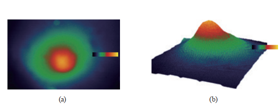

Su Yang
Ph.D student |
|
Short-Bio
I am a graduate student in the Department of Applied Bioengineering at Seoul National University, South Korea. Prior to being a graduate student, I was a research engineer at Asan Convergence Science and Technology, Asan Medical Center, South Korea. I obtained my B.Sc and M.Sc in the Keimyung University , South Korea, in 2016 and 2018. My current research focuses on deep learning, image processing, and medical image analysis in engineering fields and CBCT, MDCT, panoramic radiographs, 3D face and intraoral scans, IVOCT, MRI, and PET/CT in medical imaging fields.
News
[09/2023] I submitted three papers to SCI journals as the co-author in Sep 2023! [09/2023] I submitted four papers to SCI journals as the first author in Sep 2023! [09/2023] Three papers are accepted at SCI journals from Jan 2023 to Sep 2023! [09/2023] My home page is opened at Sep 2023!
Publications
(* Co-first authors; + Co-corresponding authors)| MANet: A Deep Multi-scale Attention Network for Virtual Osteotomy of Maxillofacial Bones in CT Images Containing Metal Artifacts. Su Yang, Ji-Yong Yoo, Sang-Jeng Lee, Se-Ryong Kang, Jun-Min Kim, Jo-Eun Kim, Kyung-Hoe Huh, Sam-Sun Lee, Min-Suk Heo, Hoon Joo Yang, Won-Jin Yi Under review. [PDF] |
|
| Ceph-Net: Automatic detection of cephalometric landmarks in scanned lateral cephalograms from children and adolescents using an attention-based stacked regression network. Su Yang*, Eun Sun Song*, Sang-Jeong Lee, Se-Ryong Kang, Won-Jin Yi+, Seung-Pyo Lee+ BMC Oral Health 2023. [PDF] |
|
| ForensicNet: Automated prediction of gender and chronological age from panoramic radiographs using a multi-task deep learning framework. Sejin Park*, Su Yang*, Jun-Min Kim, Ju-Hee Kang, Jo-Eun Kim, Kyung-Hoe Huh, Sam-Sun Lee, Min-Suk Heo, Hoon Joo Yang, and Won-Jin Yi Under review. [PDF] |
|
| Automatic Detection of Posterior Superior Alveolar Artery in Dental Cone-beam CT Images Using a Deeply Supervised Multi-scale 3D Network. Jae-An Park*, DaEl Kim*, Su Yang, Ju-Hee Kang, Jo-Eun Kim, Kyung-Hoe Huh, Sam-Sun Lee, Min-Suk Heo, Hoon Joo Yang, and Won-Jin Yi Under review. [PDF] |
|
| Comparison of 2D, 2.5D, and 3D Segmentation Networks for Maxillary Sinus and Lesion in CBCT images. Yeon-Sun Yoo*, DaEl Kim*, Su Yang, Se-Ryong Kang, Jo-Eun Kim, Kyung-Hoe Huh, Sam-Sun Lee, Min-Suk Heo, Hoon Joo Yang, and Won-Jin Yi Under review. [PDF] |
|
| Automatic Classification of the 3D Positional Relationship Between the Mandibular Third Molar and the Inferior Alveolar Canal Using a Distance-Aware Network. So-Young Chun*, Yun-Hui Kang*, Su Yang, Se-Ryong Kang, Sang-Jeong Lee, Jo-Eun Kim, Kyung-Hoe Huh, Sam-Sun Lee, Min-Suk Heo, Hoon Joo Yang, and Won-Jin Yi Under review. [PDF] |
|
| V2-Net: An Attention-guided Volumetric Regression Network for Tooth Landmark Localization on CT Images with Metal Artifacts. Su Yang*, Sang-Jeong Lee*, Ji-Yong Yoo, Se-Ryong Kang, Jun-Min Kim, Jo-Eun Kim, Kyung-Hoe Huh, Sam-Sun Lee, Min-Suk Heo, Hoon Joo Yang, and Won-Jin Yi IEEE Engineering in Medicine and Biology 2023 (EMBC2023, Oral presentation). [PDF] |
|
| Accurate and robust method for the detection of nasopalatine duct cyst and periapical cyst on panoramic radiographs using deep convolutional neural networks. Han-Sol Lee*, Su Yang*, Ji-Young Han, Ju-Hee Kang, Jo-Eun Kim, Kyung-Hoe Huh, Sam-Sun Lee, Won-Jin Yi+, Min-Suk Heo+ Oral Surgery, Oral Medicine, Oral Pathology and Oral Radiology 2023. [PDF] |
|
| SinusC-Net for automatic classification of surgical plans for maxillary sinus augmentation using a 3D distance-guided network. In-Kyung Hwang*, Se-Ryong Kang*, Su Yang, Jun-Min Kim, Jo-Eun Kim, Kyung-Hoe Huh, Sam-Sun Lee, Min-Suk Heo, Won-Jin Yi+, and Tae-Il Kim+ Scientific Reports 2023. [PDF] |
|
| Structure-Preserving Quality Improvement of Cone Beam CT Images Using Contrastive Learning. Se-Ryong Kang*, Woncheol Shin*, Su Yang, Jo-Eun Kim, Kyung-Hoe Huh, Sam-Sun Lee, Min-Suk Heo, and Won-Jin Yi Computers in Biology and Medicine 2023. [PDF] |
|
| SinusNet: Label-Free Segmentation of Maxillary Sinus Lesion in CBCT Images. Da-El Kim*, Su Yang*, Se-Ryong Kang, Jin Kim, So-Young Chun, Min-Hyuk Choi, Won-Jin Yi Medical Imaging with Deep Learning 2022 (MIDL2022). [PDF] |
|
| Automatic and Quantitative Measurement of Alveolar Bone Level in OCT Images Using Deep Learning. Sul-Hee Kim*, Jin Kim*, Su Yang, Sung-Hye Oh, Seung-Pyo Lee, Hoon Joo Yang, Tae-Il Kim+, Won-Jin Yi+ Biomedical Optics Express 2022. [PDF] |
|
| Canal-Net for automatic and robust 3D segmentation of mandibular canals in CBCT images using a continuity-aware contextual network. Bo-Soung Jeoun*, Su Yang*, Sang-Jeong Lee, Tae-Il Kim, Jun-Min Kim, Jo-Eun Kim, Kyung-Hoe Huh, Sam-Sun Lee, Min-Suk Heo & Won-Jin Yi Scientific Reports 2022. [PDF] |
|

|
QCBCT-NET for direct measurement of bone mineral density from quantitative cone-beam CT: a human skull phantom study. Tae-Hoon Yong*, Su Yang*, Sang-Jeong Lee, Chansoo Park, Jo-Eun Kim, Kyung-Hoe Huh, Sam-Sun Lee, Min-Suk Heo & Won-Jin Yi Scientific Reports 2021. [PDF] |
| Deep learning segmentation of major vessels in X-ray coronary angiography. Su Yang, Jihoon Kweon, Jae-Hyung Roh, Jae-Hwan Lee, Heejun Kang, Lae-Jeong Park, Dong Jun Kim, Hyeonkyeong Yang, Jaehee Hur, Do-Yoon Kang, Pil Hyung Lee, Jung-Min Ahn, Soo-Jin Kang, Duk-Woo Park, Seung-Whan Lee, Young-Hak Kim, Cheol Whan Lee, Seong-Wook Park & Seung-Jung Park Scientific Reports 2019. [PDF] |
|
| A Fully Automated Classification and Segmentation of X-Ray Coronary Angiography Using Deep Learning Approach. Su Yang, Jihoon Kweon, Young-Hak Kim, Jae-Hyung Roh, Pil Hyung Lee, Jung-Min Ahn, Duk-Woo Park, Seung Whan Lee, Cheol Whan Lee, Seong-Wook Park, Seung-Jung Park TCT 2019. [PDF] |
|
| Major Vessel Segmentation on X-ray Coronary Angiography using Deep Networks with a Novel Penalty Loss Function. Su Yang, Jihoon Kweon, Young-Hak Kim Medical Imaging with Deep Learning 2019 (MIDL2019). [PDF] |
|
| A Novel Automated Lumen Segmentation and Classification Algorithm for Detection of Irregular Protrusion after Stents Deployment. Su Yang, Hyuck-Jun Yoon, Seyed Jamaleddin Mostafavi Yazdi, Jong-Ha Lee The International Journal of Medical Robotics and Computer Assisted Surgery 2019. [PDF] |
|
| The Automated Lung Segmentation and Tumor Extraction Algorithm for PET/CT Images. Su Yang, Hae Won Kim, Jong-Ha Lee Sensors & Transducers Journal 2019. [PDF] |
|
|  | Tissue Hardness Measurement Sensor and Algorithm for Tumor Detection Using Light Trapping and Scattering in Silicone Waveguide. Su Yang, Jong-Ha Lee Sensors and Materials 2018. [PDF] |
| Image Registration using Advanced Topology Preserving Relaxation Labeling. Chan-IL Kim, Ji-Ae Park, Su Yang, Yoon-Nyun Kim, Hee-Jun Park, and Jong-Ha Lee CS & IT-CSCP 2016. [PDF] |
|
Selected Awards
Academic Services
© Su Yang | Last updated: March 2023